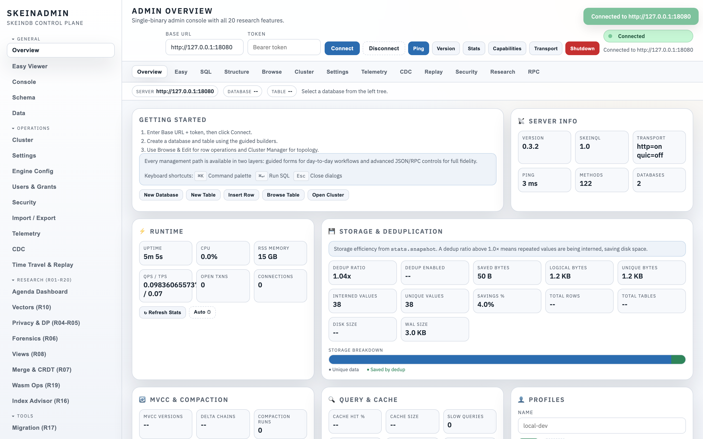
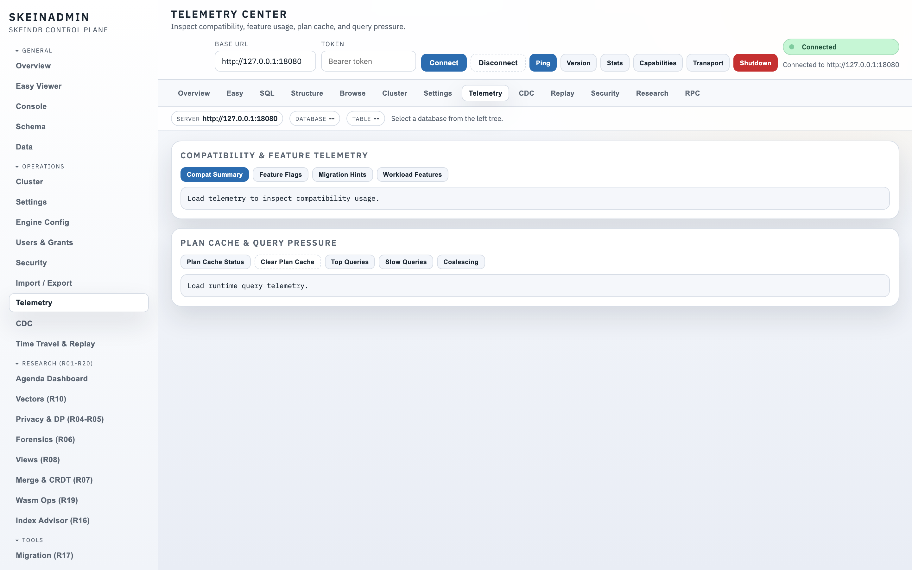
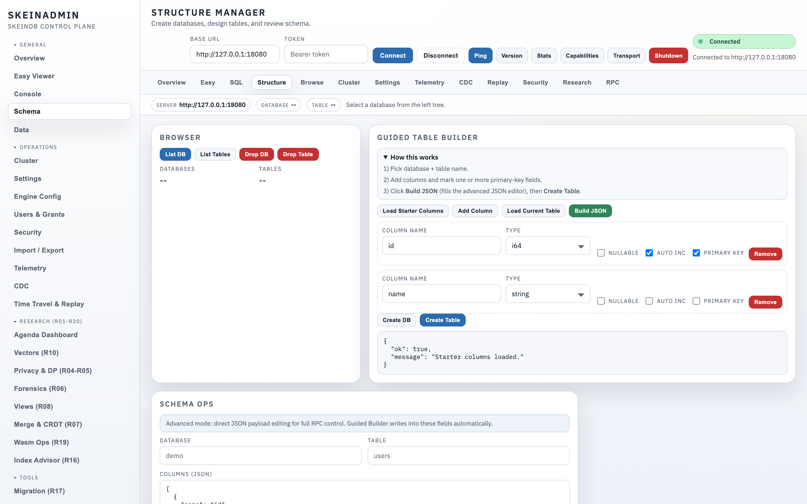
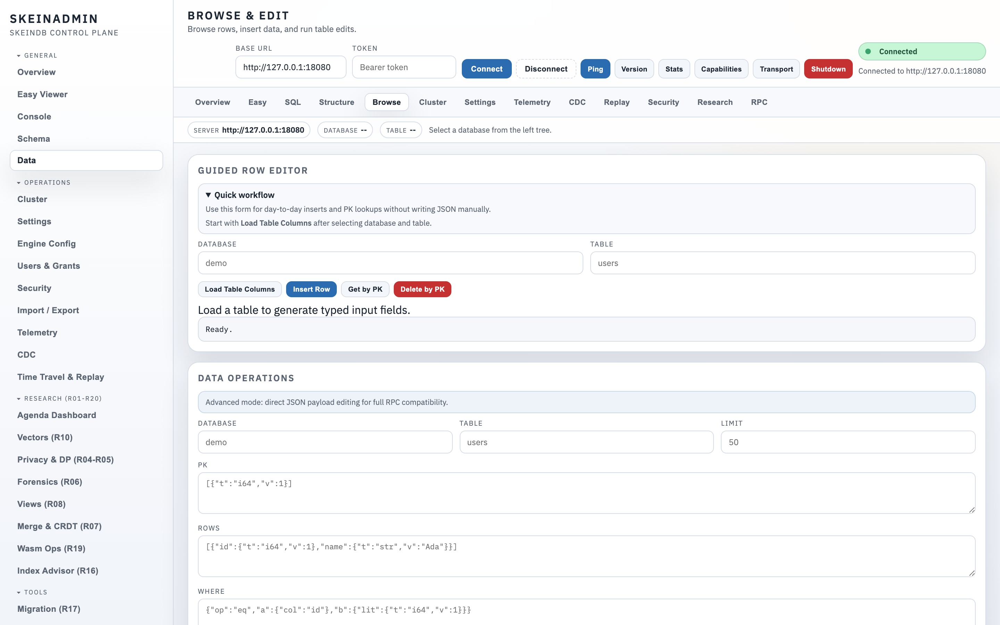
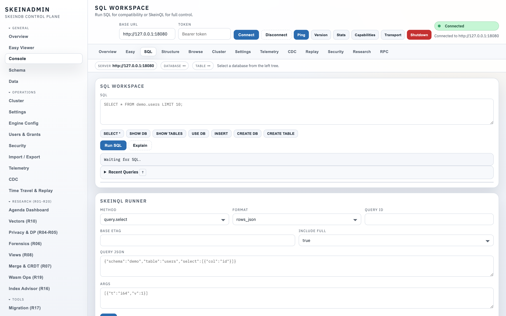
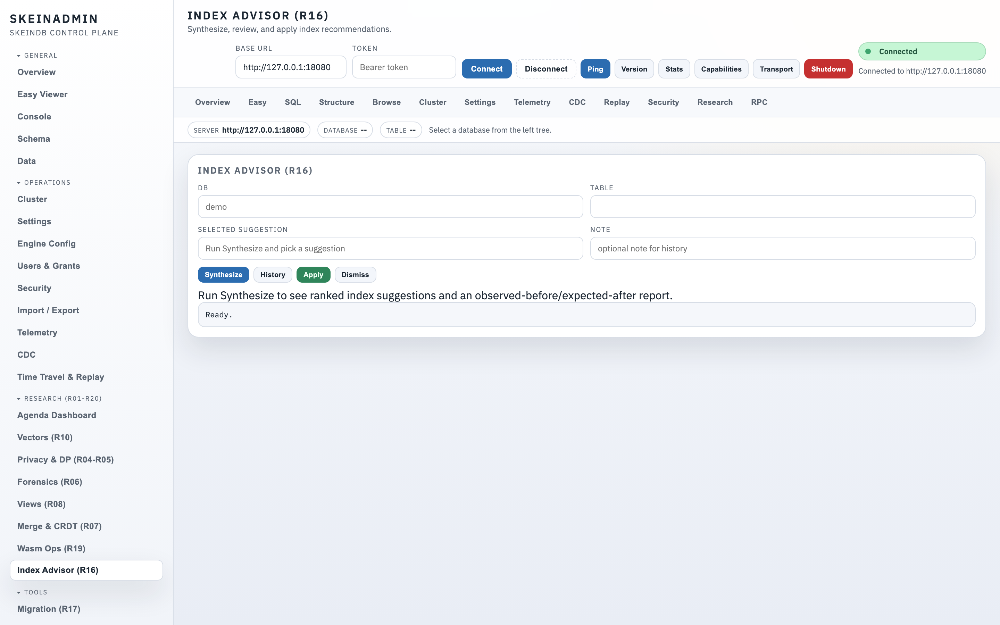
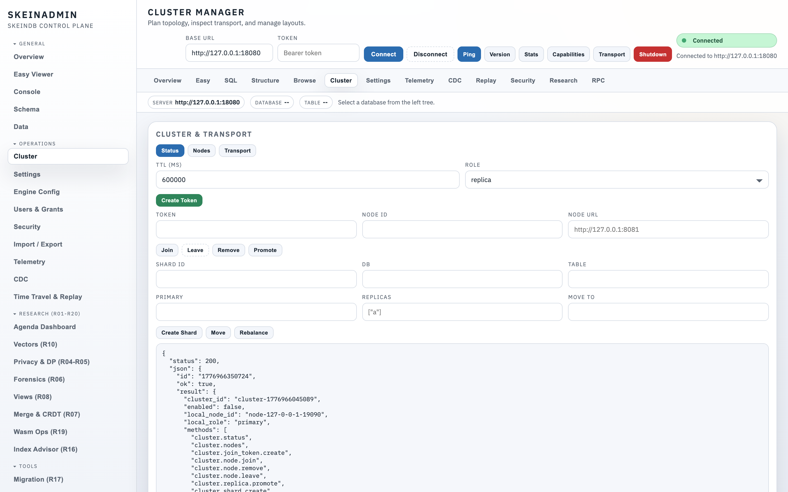
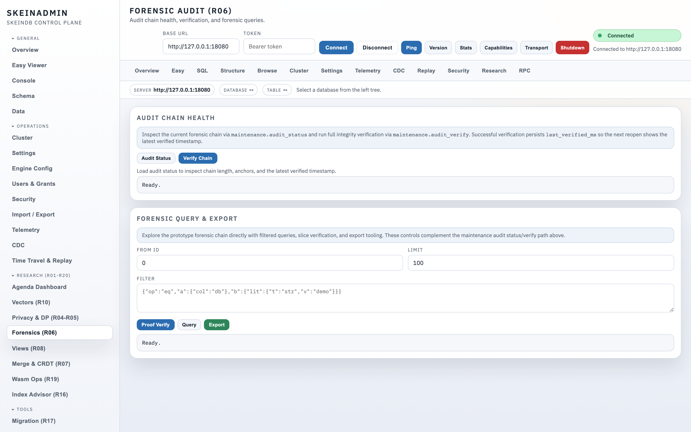

Admin console tour¶
SkeinAdmin is the built-in web admin — 26 panels covering schema, data, configuration, clustering, research features, and operations. It ships with the single binary: no separate install, no Node/Electron, no cloud service.
Open it at http://127.0.0.1:8080/admin once skeindb serve is running.
Layout¶

- Left sidebar — panel switcher, grouped into Data, Ops, Security, Research, and System.
- Top bar — connection info, node status, running server version.
- Main pane — the active panel.
- Status strip — health, storage size, replica lag, alerts.
Tour of the key panels¶
Dashboard¶

At-a-glance: throughput, QPS, WAL lag, slow queries, connection counts. Small enough to watch on a laptop.
Schema browser¶

Tree view of databases → tables → columns / indexes / views. Click a column to see type, nullability, default, and referring indexes.
Data editor (Easy Viewer)¶

Inline database creation, live CREATE TABLE preview, cell editing with MVCC version history on the right panel. Useful for early development without dropping into SQL.
SQL console¶

Dialect-aware: write MySQL, PostgreSQL (partial), or SkeinQL; results render in the same table. Query history, save/share snippets, explain plans.
Index advisor¶

The Index advisor page. Ranked recommendations from workload telemetry, with an "apply" button and an observed-before / expected-after panel.
Cluster dashboard¶

Topology view: nodes, shards, replica lag, join tokens, manual promotion, rolling upgrade co-ordination. See Clustering.
Audit WAL viewer¶

Tamper-evident log viewer with forensic query language. Verify chain integrity from the UI. See Audit WAL.
Research panels¶
Dedicated UIs for research tracks: ETag cache coherence, query coalescing, CDC, Wasm UDFs, oblivious execution, differential privacy budgets, merge policies, delta chains, column snapshots. Each panel surfaces the relevant metrics and toggles — the same data the SkeinQL API exposes, just visual.
Keyboard shortcuts¶
| Shortcut | Action |
|---|---|
Ctrl / Cmd + K |
Command palette / fuzzy panel jump |
Ctrl / Cmd + Enter |
Run query in SQL console |
? |
Show all shortcuts |
g + d |
Go to Dashboard |
g + s |
Go to Schema browser |
Authentication¶
By default, SkeinAdmin is served on the same port as SkeinQL. For production, put a reverse proxy in front and configure auth via admin.auth in skeindb-config.json. Settings are also editable from the admin console's Settings → Explorer panel with live validation.